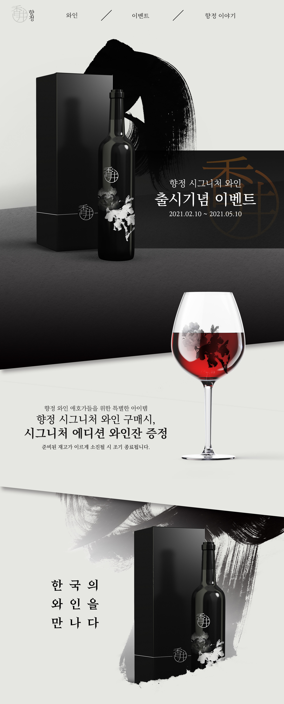
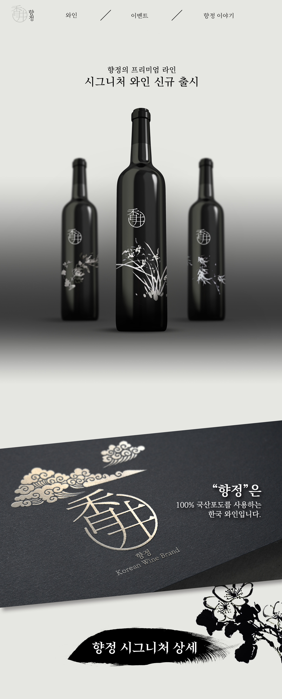
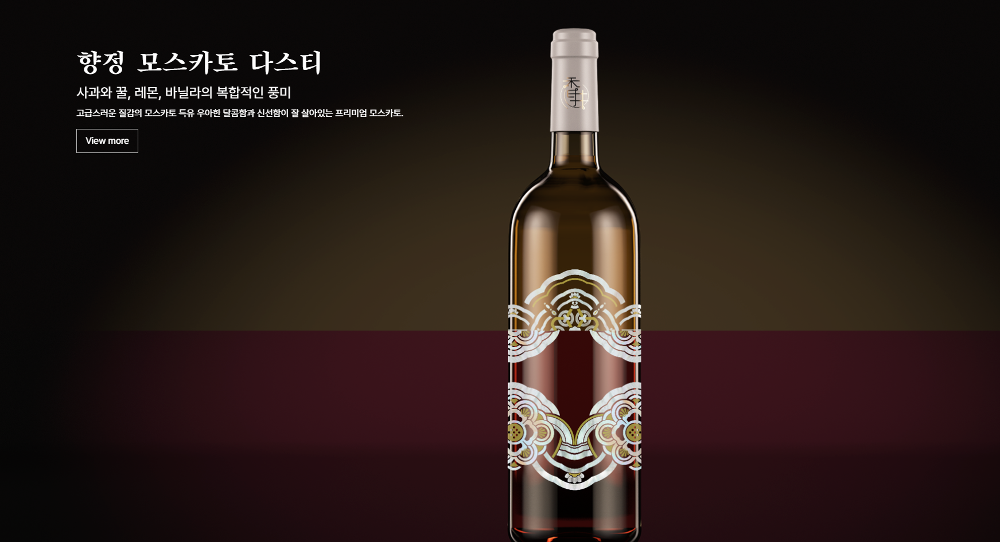
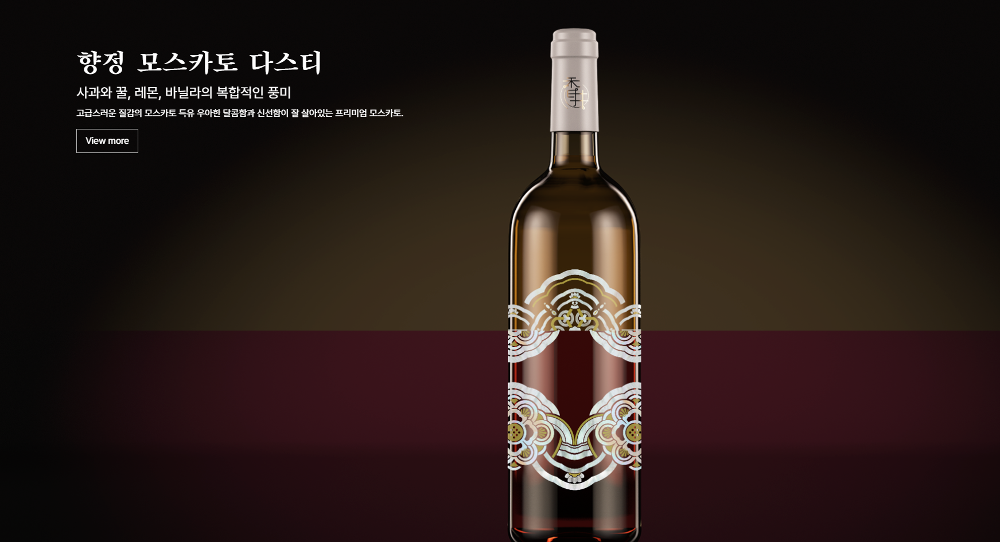

mask 효과를 사용하여 액체가 종이에 번지는 것처럼 페이지를 오픈
 香井향정 바로가기
香井향정 바로가기
Overview
“香井향정”은 전통적인 컨셉을 기본으로 하여 한국 고유의 멋과 맛을 새롭게 담아내는 한국 주류 브랜드입니다.
Design Concept
"한국와인은 한국에서 한국 농산물을 발효해 만든 과실발효주를 뜻하며, 포도만으로 국한되지 않았다. 한국와인의 원료는 우리 땅에서 자란 머루, 사과, 매실, 복분자, 딸기 등 다양한 종류의 과일들이며 이를 발효시켜 만든 와인을 한국와인이라 칭한다."
▶ 기사 참고대다수의 한국와인 라벨디자인은 한글 캘리그라피를 이용해 한국 고유의 느낌을 살려 우리만의 디자인을 추구하고자 하며 이는 수입와인과의 차별을 강조하기 위함이다. 하지만 최근 와인 라벨디자인의 동향을 볼 시 소믈리에타임즈(2021)에 의하면 기존 전통적인 와인 라벨에서는 포도 품종과 생산지, 생산연도, 양조장 등의 정보를 담았지만, 최근 출시되는 와인은 기존의 방식과 달리 해당 와인의 역사와 양조인의 이야기를 담기도 하고 활자없이 이미지만으로 제작된 라벨디자인부터 펑키한 스타일의 라벨디자인까지 다양하다고 한다.
▶ 한국와인 라벨디자인 특성이 소비자 구매의도에 미치는 영향본래의 디자인 컨셉트는 한국의 주조로 이루어진 국산 와인 브랜드였으나 리디자인을 계획하며 다양한 국내 주조에 대한 정보를 찾아보게 되었습니다. 하여, 위와 같은 기사와 논문 등의 사료들을 기반으로 하여 "여러가지 맛을 내는 국내 와인"과 "한국 고유의 느낌을 살릴 수 있는 디자인 컨셉"을 기반으로 퍼블리싱과 패키지 디자인을 진행하였습니다.
Time Line
1. 기존 디자인한 브랜드를 기반으로 새로운 컨셉트와 모티브, 자료를 조사
2. 조사를 토대로 리디자인 방향 구상 및 결정
3. 작업한 디자인을 기반으로 한 랜딩페이지 워크플로우 구상 및 디자인
4. HTML-CSS로 페이지 구축
5. jquery 스크립트를 사용한 이벤트 추가
Design 2016


길이에 비해 정보 전달이 떨어지는 페이지 구조와 디자인
UI UX Vision
제품에 대한 인상을 확실하게 주고 그에 대한 정보를 전달할 수 있도록 함
 
